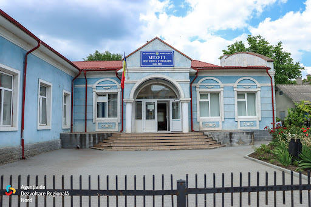

Muzeul de Istorie și Etnografie din Bălți
Păstrează trecutul, inspiră viitorul.
Discover stories, artifacts, and interactive exhibits that bring our city's past to life.
Featured exhibition
"Roots of the City" — Folk Art & Daily Life
